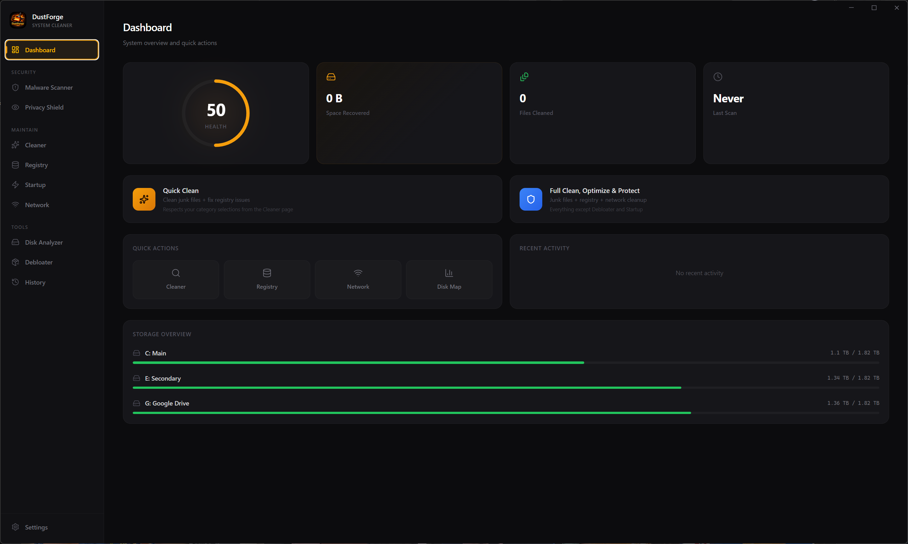
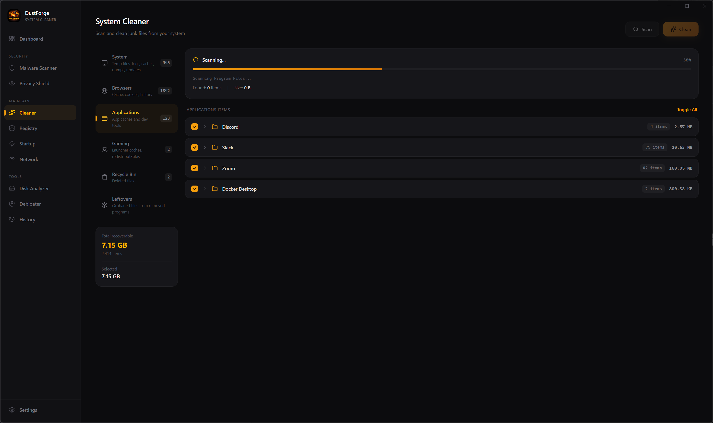
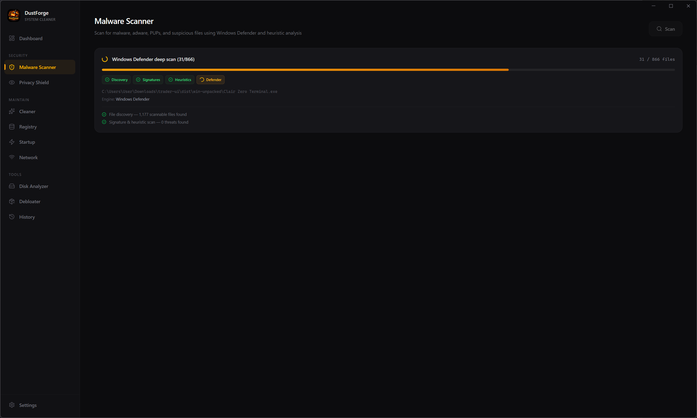
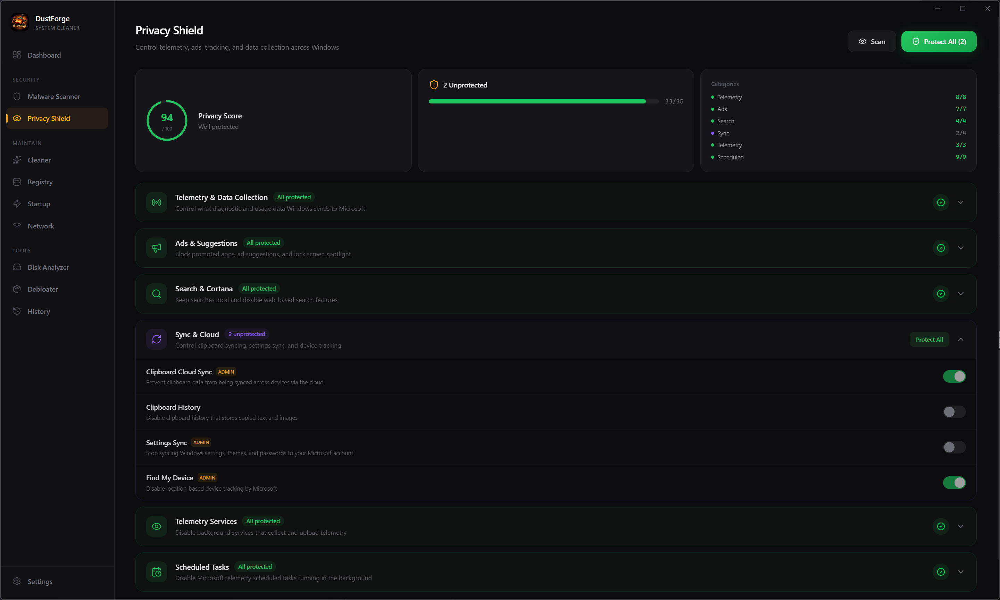
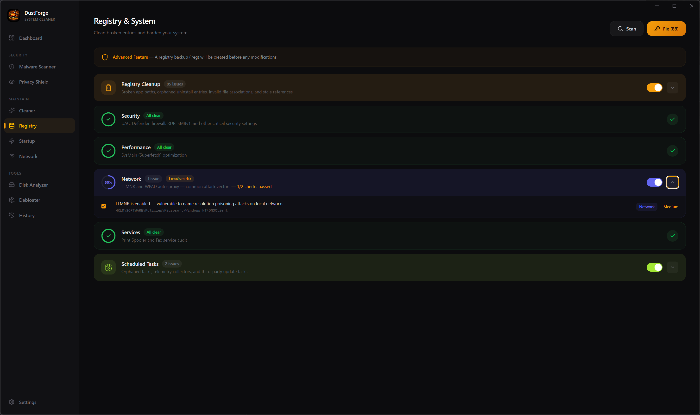
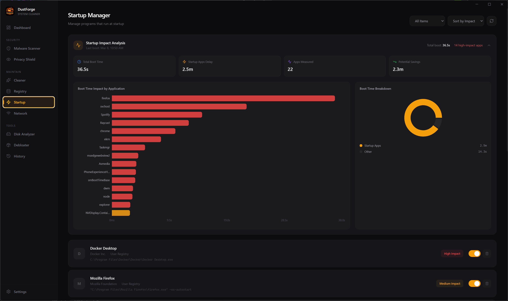
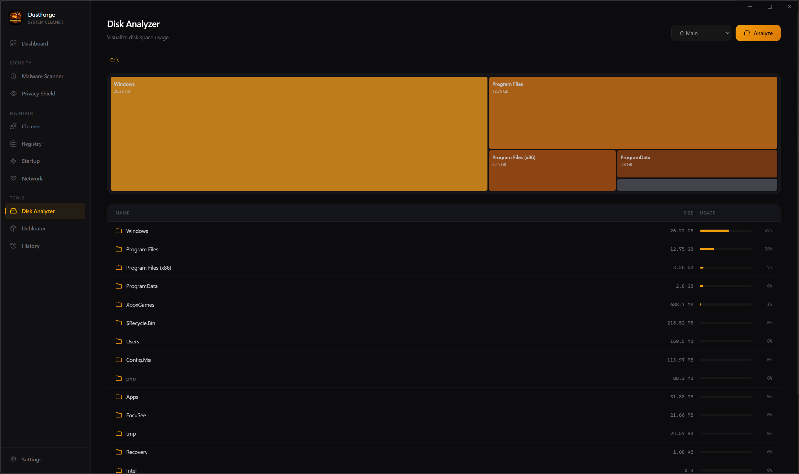
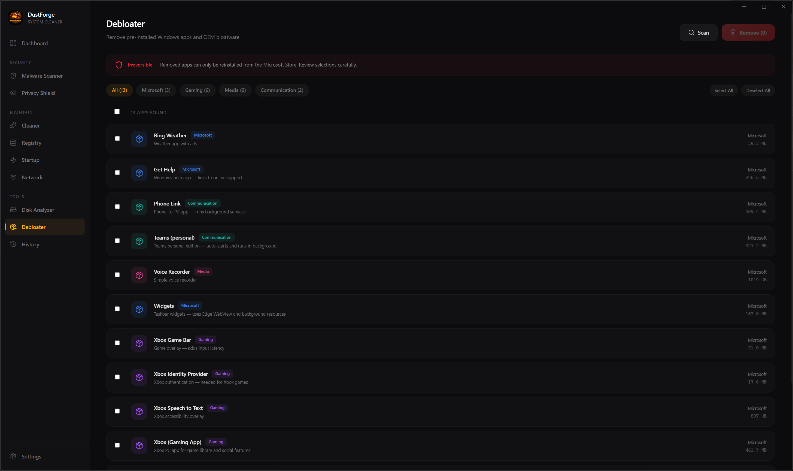
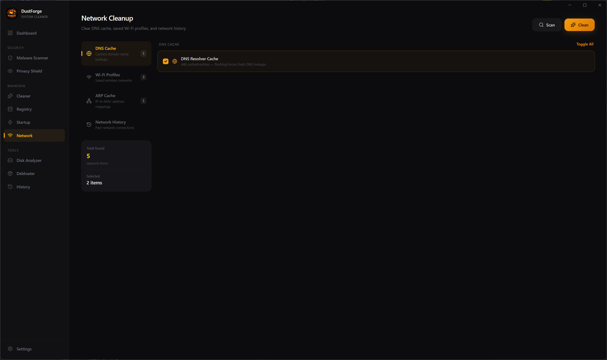

An advanced open-source system cleaner, optimizer, and security tool built for Windows power users. 15+ specialized tools in one beautiful interface.
Free & open source · Windows 10/11 · MIT License

Every tool is designed with clarity and purpose. Tab through the features below.
Your system at a glance. Health score, storage overview, quick actions, and recent activity — all in one place. Launch a full clean or jump into any tool with a single click.

Scan and remove junk files across 6 categories: system temp files, browser data, app caches, gaming redistributables, recycle bin, and uninstall leftovers. Every item is individually selectable.

Multi-engine threat detection using signature matching, heuristic analysis, and Windows Defender integration. Quarantine or delete threats with full progress tracking across each scan phase.

Take control of 30+ Windows privacy settings. Disable telemetry, advertising ID, Cortana, Bing search, and more. See your privacy score and apply all protections with one click.

Deep registry analysis covering broken paths, orphaned entries, security vulnerabilities, performance tweaks, network settings, service audits, and scheduled tasks. Auto-backup before any fix.

Visualize boot impact with real-time analysis from Windows Event Trace. See exactly which apps slow your boot the most, with per-app timing charts and one-toggle control.

Interactive treemap visualization showing exactly where your disk space is going. Drill into any folder, see sizes at a glance, and identify the biggest space hogs across all drives.

Remove pre-installed Windows bloatware you don't need. Filter by category — Microsoft, Gaming, Media, Communication — and reclaim resources from apps running in the background.

Clear DNS cache, manage saved Wi-Fi profiles, flush ARP cache, and clean network history. Keep your network configuration lean and your connection data private.
Scan your DriverStore for stale driver packages consuming disk space. Remove old versions safely, and check for driver updates through Windows Update — all from one interface.
Real-time system monitoring with CPU, memory, disk, and network gauges. Per-core utilization, time-series charts, and a built-in process manager to identify and kill resource-hungry processes.
Purpose-built tools for maintaining, optimizing, and securing your Windows system.
Scans system files, browsers, app caches, gaming folders, recycle bin, and uninstall leftovers with real-time progress tracking.
Three-engine scanning with signature matching, heuristic analysis, and Windows Defender integration. Quarantine or delete threats.
Control 30+ Windows privacy settings. Disable telemetry, ads, Cortana, and tracking with a privacy score and one-click hardening.
Deep scan for broken paths, orphaned entries, security vulnerabilities, and performance issues. Auto-backup before any fix.
Interactive treemap visualization showing where your space goes. Navigate folders and identify the biggest space consumers.
Analyze boot impact with Windows Event Trace data. See per-app timing charts and disable high-impact startup entries.
Remove pre-installed Windows apps and bloatware by category. Reclaim resources from apps you never asked for.
Flush DNS, manage Wi-Fi profiles, clear ARP cache, and remove network history to keep your connections private and clean.
Scan for stale driver packages consuming disk space and check for driver updates via Windows Update. Clean old versions safely.
Real-time CPU, memory, disk, and network monitoring with per-core stats, time-series charts, and a process manager to kill resource hogs.
Set it and forget it. Configure automatic scans on your schedule with system tray integration and notification alerts.
Download DustForge and take back control of your Windows system.